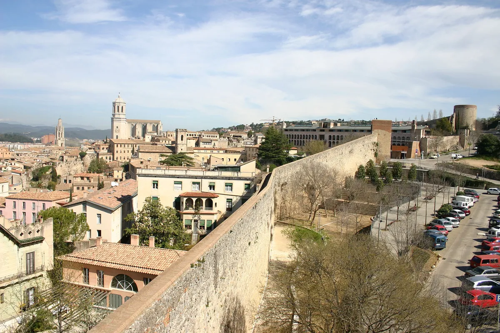
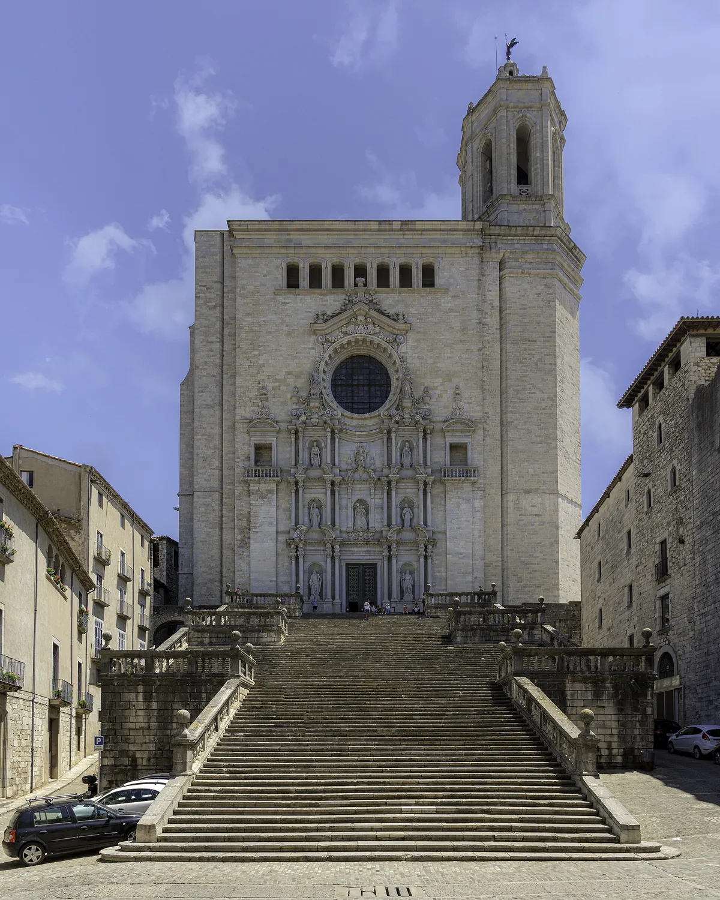
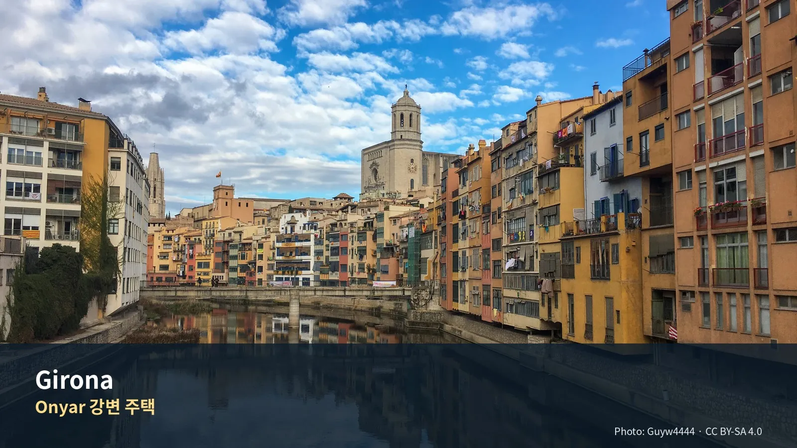
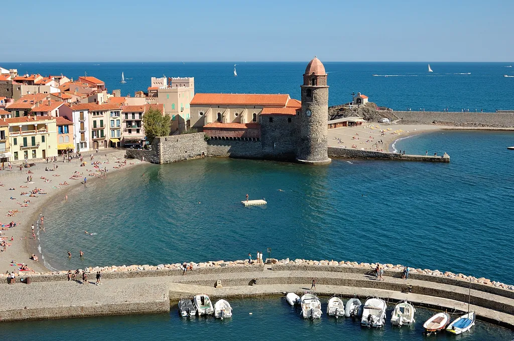
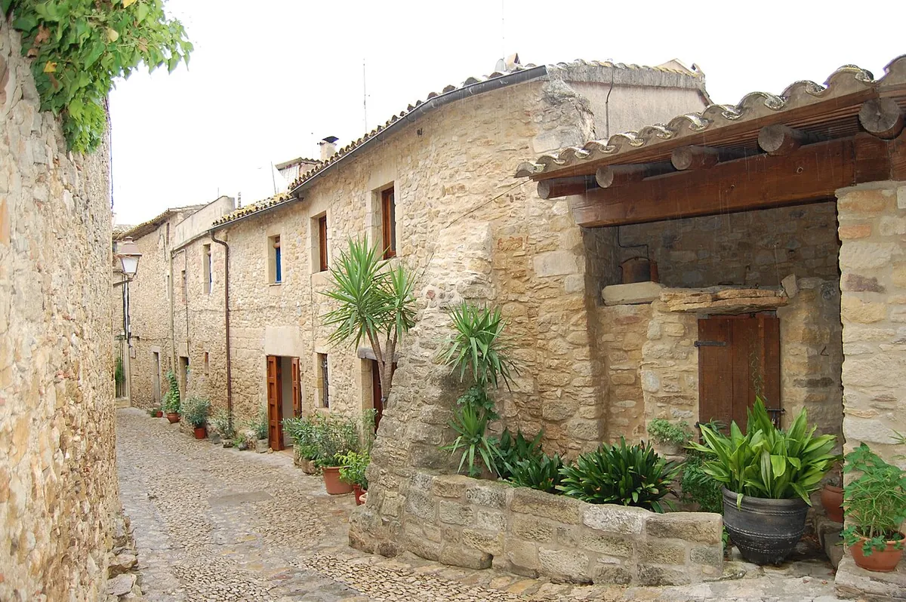
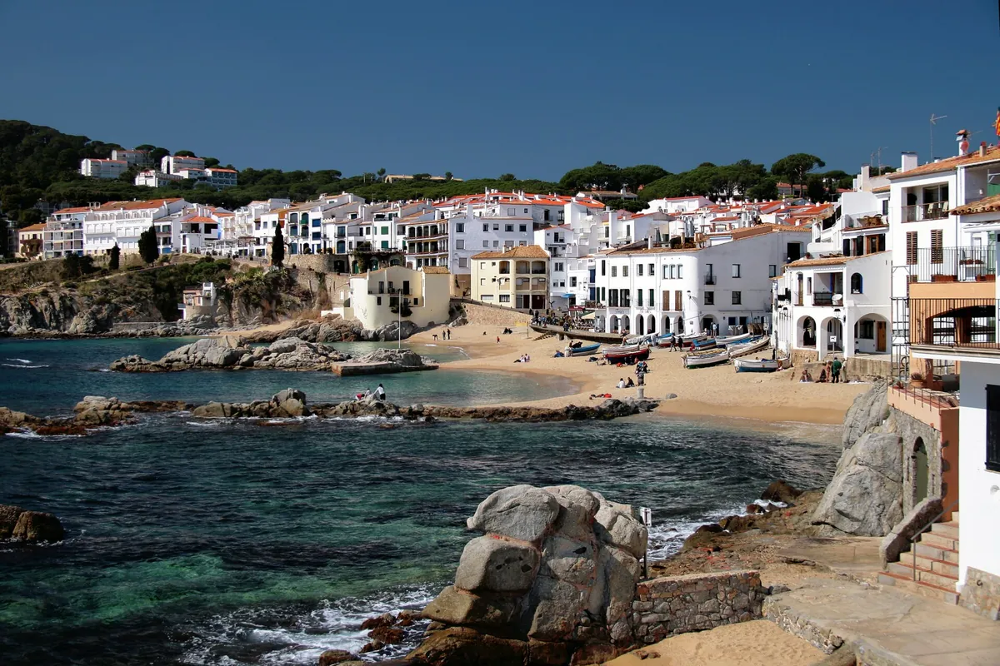

무엇을 보고 어디를 갈 것인가
추가 장소 대표 이미지

이미지를 불러오지 못했습니다.주요 방문지
파일별 라이선스를 확인한 로컬 대표 이미지만 표시합니다.
오프라인입니다. Google Maps 외부 링크는 연결되면 다시 동작합니다.

이미지를 불러오지 못했습니다.세계에서 가장 넓은 고딕 신랑을 가진 대성당

이미지를 불러오지 못했습니다.오냐르 강변의 색색 파사드와 붉은 철교

이미지를 불러오지 못했습니다.수요시장·항구·Notre-Dame-des-Anges·왕궁 외관을 오전에 연결하는 프랑스 카탈루냐 핵심 방문지
해안 쪽 우회로 연결하는 구시가지·Santa Maria·해안 산책 핵심 방문지
Vila Vella·등대 전망대·Platja Gran을 아침에 보는 Day 3 핵심 방문지
GI-682 해안축의 산책·점심 거점
본 일정에서 제외한 대체안 — 실제 예약 없음
엠포르다 평야를 내려다보는 중세 석조마을

이미지를 불러오지 못했습니다.돌을 깎아 만든 해자와 요새의 마을

이미지를 불러오지 못했습니다.Day 3 핵심 일정에서 제외한 별도 대체안
놓치면 아쉬운 선택
| 등급 | 장소·경험 | 이 가이드북에서 추천하는 이유 |
|---|---|---|
| 필수 | Girona 성벽과 대성당 권역 | 도착일 저녁과 이른 아침으로 나눠 도시의 높이와 골목을 읽는다. |
| 우선 추천 | Collioure | 시장·항구·야수파 풍경을 한 번에 경험하는 가장 성격이 뚜렷한 당일치기다. |
| 우선 추천 | Collioure–Cadaqués | 오전 장날과 해안 쪽 우회를 연결한다. |
| 우선 추천 | Tossa–Sant Feliu–Pals–Peratallada | 해안축과 귀로 마을을 압축해 연결한다. |
| 대체안 | Peralada·Calella de Palafrugell | 본 일정에서 제외하며 실제 예약·취소를 가정하지 않는다. |
하루를 완성하는 네 가지 선택
| 시간·역할 | 추천 | 이용법 |
|---|---|---|
| 아침 | Bàscara 숙소 주변 산책 | 농촌 거점의 조용한 아침을 쓰고 Girona 방문은 별도 차량 동선으로 본다. |
| 점심 | Peratallada | 석조 골목 산책과 식사를 한 장소에 묶어 이동횟수를 줄인다. |
| 저녁 | Bàscara 복귀 후 간단식 | Girona에서 식사하면 숙소까지 다시 운전해야 하므로 음주와 늦은 귀환을 피한다. |
| 스케치 | Onyar 강변 또는 Calella 만 | 색면과 수평선이 분명해 짧은 스케치에 적합하다. |
이 지역의 Top 10
- Onyar 강변
- 대성당 계단
- 성벽
- 유대인 지구
- Collioure 시장
- 왕궁·항구
- Cadaqués
- Pals
- Peratallada
- Tossa de Mar·Sant Feliu de Guíxols
일정에 포함된 장소별 상세 가이드
일정에 들어간 11곳을 순서대로 싣는다. 각 항목은 무엇인지, 무엇이 핵심인지, 현장에서 어떻게 볼 것인지로 나뉜다. 운영시간과 요금은 표로 분리했고 변동 항목에는 재확인 표시를 달았다.
Day 4 — 지로나
지로나 대성당 — 필수
무엇인가
8세기에 이 자리의 초기 기독교 교회가 모스크로 바뀌었다가, 10세기 초에 다시 봉헌됐다. 1015년 무렵에는 상태가 심각하게 나빠져 있었고, 그때부터 로마네스크 양식으로 다시 짓기 시작한 것이 지금 대성당의 출발점이다.
이후 600년에 걸쳐 양식이 세 번 바뀌었다. 11세기 로마네스크로 시작 → 13세기에 고딕으로 전환 → 1730년에 바로크 파사드 완성. 한 건물 안에서 세 시대를 볼 수 있다는 뜻이고, 이것이 이 성당을 보는 첫 번째 축이다.
핵심 — 23미터를 기둥 없이 건너뛴 결정
지로나 대성당의 고딕 신랑(nave)은 폭 약 23m로 세계에서 가장 넓다. 성 베드로 대성당 다음으로 넓은 교회 내부이기도 하다.
왜 이게 어려운가. 고딕 건축은 보통 기둥을 촘촘히 세워 천장 하중을 나눠 받는다. 기둥 간격을 넓히면 한 지점이 받는 힘이 급격히 커진다. 당시 설계자들은 회중석을 세 개로 나누는 안전한 방식 대신 하나로 통합하는 안을 택했다. 중세 건축사에서 가장 급진적인 구조 결정 중 하나로 꼽힌다.
기둥이 시야를 끊지 않는다 90계단을 올라 정면으로 들어간 직후, 옆을 보지 말고 정면 끝까지 한 번에 보라. 기둥이 시야를 끊지 않는 경험이 이 성당의 전부다. 다른 고딕 성당에서는 불가능하다. 5초면 된다. 그 다음에 둘러봐도 늦지 않다.
보물관 — 세 점이 전부다
전시품이 많지만 실제로 봐야 하는 건 셋이다.
창조의 태피스트리 (11~12세기)
양모와 리넨으로 만든 3.65 × 4.70m 자수 패널이다. 태피스트리라고 부르지만 실제로는 자수다. 로마네스크 직물 예술 중 세계적으로 손꼽히는 유물이다.
읽는 순서가 있다 1. 중앙 — 판토크라토르(만물의 지배자 그리스도)와 창세기 첫 장면들 2. 네 모서리 — 날개 달린 형상 넷. 사방의 바람이다 3. 테두리 — 계절, 열두 달, 요일. 시간의 흐름 4. 아래쪽(일부 소실) — 성 헬레나의 성십자가 탐색 즉 중심에 창조, 바깥에 시간이다. 이 구조를 모르고 보면 그냥 복잡한 자수다. 원래 용도는 아직 논쟁 중이다. 제단 위 천개(天蓋)였는지, 제단 앞 장식판이었는지, 성소의 휘장이었는지 확정되지 않았다.
지로나 베아투스 (975년경)
8세기 수도사 리에바나의 베아투스가 쓴 『요한계시록 주해』의 10세기 필사본이다. 레온의 타바라 수도원 공방에서 만든 것으로 본다. 전면 세밀화가 100장이 넘는다. 중세 채색 사본 중 최상급으로 평가된다.
대제단 은제 제단화 (1320~1357)
금세공사 바르토메우가 37년에 걸쳐 만든 은도금·에나멜 작품. 그리스도 생애 16장면이 금과 보석으로 표현돼 있다. 지금도 대제단 위 제자리에 있다.
그 밖에
- 12세기 로마네스크 회랑 — 조각가 아르나우 카델의 작품
- 성 미카엘 문(북면)과 사도 현관(남면) — 14세기 고딕
- 정면의 90계단은 1685~1699년 사이 세 구간으로 지어진 바로크 계단이다
실용
| 항목 | 값 |
|---|---|
| 통합권 | 대성당 + 산 펠리우 성당 + 미술관 €12 (오디오가이드 포함) [재확인] |
| 소요 | 성당 본체 40분 + 보물관 30분 |
| 진입 | 90계단. 무릎 부담 있으면 측면 접근로 확인 |
| 복장 | 종교시설. 어깨·무릎 노출 주의 |
성벽 (Passeig de la Muralla) — 필수
무엇인가
지로나 성벽은 두 시기의 것이 겹쳐 있다. 카롤링거 시대(9세기) 와 중세(14~15세기). 주의 깊게 보면 기원전 1세기 로마 성벽의 일부도 알아볼 수 있다.
전체 산책로는 약 2km다. Passeig de la Reina Joana와 Jardins de la Francesa에서 시작해 Jardins de la Muralla까지 이어진다. 처음에는 성벽 옆 정원을 따라 걷다가, 곧 성벽 위로 올라가 중세 흉벽 통로를 걷게 된다. 현대에 추가한 금속 계단과 통로가 중간중간 있다.
관람 요령
위에서 3층 구조를 확인하라. 언덕 꼭대기 대성당 → 그 아래 유대인 지구 → 강가 상인 구역. 아래에서 골목을 걸을 때는 이게 안 보인다. 성벽 위에서만 도시의 설계가 보인다. 중간에 내려올 수 있다. 오르내리는 계단이 여러 개다. 2km를 다 걷지 않아도 된다. 더위나 피로에 따라 중간 이탈이 자유롭다. 토레 지로넬라로 짧게 우회하라. 성벽 코스에서 조금 벗어난 곳에 지로넬라 탑 유적이 있다. 1391년, 유대인 공동체가 17주간 포위당한 채 버틴 자리다. Call을 걸은 뒤에 여기를 보면 아침에 본 골목의 의미가 달라진다.
실용
| 항목 | 값 |
|---|---|
| 요금 | 무료 |
| 운영 | 야외 구간 상시 개방 |
| 소요 | 전 구간 60~75분 / 부분 30분 |
| 주의 | 그늘이 적다. 한낮 회피. 물 지참 |
Call — 유대인 지구
지역소개에서 다룬 배경을 전제로, 현장에서 볼 것만 정리한다.
발밑을 의식하라. Carrer de la Força는 로마 시대 게룬다의 중심 도로였다. 로마 도로 위에 중세 유대인 지구가 얹혔고, 그 위를 지금 걷는다. 골목 폭의 변화를 보라. Call 안쪽으로 들어갈수록 골목이 좁아지고 계단이 잦아진다. 인구가 늘면서 위로, 안으로 밀집한 결과다. 이 밀도가 1492년에 멈췄다. 관광 표지판보다 문틀을 보라. 문설주에 메주자(성구함)를 붙였던 홈이 남은 집이 있다.
실용
| 항목 | 값 |
|---|---|
| Museum of Jewish History | €6 [재확인] · 9월–6월 화–토 10:00–18:00 |
| 소요 | 골목 산책 40분 / 박물관 포함 90분 |
| 이번 일정 | 박물관은 제외. 우천 또는 Day 3 출발 지연 시 대체안 |
오냐르 강변 — 우선 추천
무엇인가
강 양쪽으로 색색의 주택이 붙어 있다. 지로나를 대표하는 이미지지만, 정작 그 집들 안쪽이 구시가지라는 사실은 잘 알려지지 않았다.
관람 요령
서쪽에서 봐야 보인다. 동쪽(구시가지) 안에 있으면 이 풍경은 안 보인다. 다리 위나 서쪽 강변에서 봐야 한다. 시간대가 중요하다. 강 서쪽에서 동쪽을 보므로 늦은 오후 서향광에 색이 가장 살아난다. 도착일 저녁 산책 코스로 정확히 맞는다. 색이 왜 저런지. 이 배색은 근래에 정비된 것이다. "중세부터 저랬다"고 오해하기 쉽다.
Day 5 — 콜리우르 · 페랄라다
콜리우르 시장 (수요일) — 필수
Day 2가 수요일이라 장날과 정확히 맞는다. 우연이 아니라 일정 설계의 결과다.
프랑스 남부 시장의 표준 구성이다. 채소·치즈·올리브·향신료·직물. 다만 콜리우르는 항구라 안초비와 염장 생선 비중이 높다.
사기 전에 한 바퀴 돌아라. 같은 품목을 파는 좌판이 여럿이고 가격이 다르다. 안초비는 두 종류다. 소금 절임(salées) 은 먹기 전에 씻어 소금기를 빼야 한다. 기름 절임(à l'huile) 은 바로 먹는다. 선물용이면 기름 절임이 편하다. 유리병은 무겁고 깨진다. 이후 40일을 더 이동하므로 캔이나 진공 포장을 고를 것.
⚠ 장날에는 중심가 주차가 제한된다. Cap Dourats 주차 지침과 셔틀 종료 시간을 확인할 것.
Château Royal de Collioure — 필수
무엇인가
13세기에 기원을 둔 요새다. 바다에 바로 접해 있고, 마을 한가운데 서 있다.
여기서 중요한 것은 건축 자체보다 위치가 만든 역사다. 콜리우르는 스페인 국경에서 약 5km 거리다. 이 성은 지중해와 피레네가 만나는 지점의 통제권을 둘러싸고 수백 년간 주인이 바뀐 자리다.
2005년 야수파 100주년에는 이 성에서 「마티스와 그의 친구들 — 콜리우르 1905-1906」 전시가 열렸다. 성이 마을 예술사의 전시 공간 역할도 한다.
성 안보다 성벽 위에서 보이는 것이 핵심이다. 항구, 노트르담 데 장주 성당의 독특한 종탑, 그리고 계단식 포도밭이 있는 산비탈이 한 프레임에 들어온다. 마티스와 데랭이 1905년에 본 구도가 이것이다.
실용
| 항목 | 값 |
|---|---|
| 요금·운영 | [재확인] |
| 소요 | 45~60분 |
| 주의 | 야외 비중 높음. 한낮 더위 |
Chemin du Fauvisme — 필수
무엇인가 — 석 달이 미술사를 바꾼 사건
1905년 5월 16일, 앙리 마티스가 콜리우르에 도착했다. 폴 시냐크의 조언을 따른 것이고, 생트로페와 점묘법을 뒤로 하고 온 길이었다.
혼자 지내던 마티스가 친구들을 불렀다. 7월 초, 앙드레 드랭이 파리에서 왔다. 마티스보다 열 살 아래였다. 드랭은 8월 31일까지 머물렀다.
두 사람이 이 항구에서 함께 보낸 시간은 석 달이 안 된다. 그 사이의 생산량이 이렇다.
| 유화 | 수채 | 드로잉·스케치 | |
|---|---|---|---|
| 마티스 | 15점 이상 | 40점 | 100여 점 |
| 드랭 | 30점 | — | 70여 점 |
여기서 야수파(Fauvisme)가 태어났다. 그해 가을 살롱 도톤에 출품된 이 그림들은 격렬한 논란을 일으켰다.
마티스는 나중에 이렇게 회고했다 — 고양시키는 풍경 앞에서 작업하면서, 모든 규칙과 금기를 무시한 채 색을 노래하게 만들 생각만 했다고.
드랭이 친구 블라맹크에게 보낸 편지는 더 직설적이다. 야수주의는 불의 시련이었고, 색채가 다이너마이트 뭉치가 되었으며, 그것들이 빛을 터뜨려야 했다는 것.
어떻게 걷는가
마을 곳곳에 마티스와 드랭의 작품 복제화가, 그 그림이 그려진 바로 그 자리에 설치돼 있다. 마티스의 「열린 창」, 드랭의 「돛 말리기」 같은 작품들이다. 원작은 지금 세계 각지 미술관에 흩어져 있다.
복제화 앞에 서서 그림과 실제를 겹쳐 보라. 이게 이 산책로의 전부이자 목적이다. 그림만 보면 미술관과 다를 게 없다. 무엇이 변했고 무엇이 안 변했는지 확인하라. 1905년 이후 해변은 둘로 갈라졌다. 라틴 세일을 단 색색의 카탈루냐 배도, 검은 옷을 입고 그물을 깁던 여자들도 사라졌다. 그런데 교회와 그 독특한 종탑, 왕성은 그대로다. 이 대비가 산책의 리듬을 만든다. 시작점. Place du 18 Juin의 관광안내소에서 지도를 받는다. 주 해변 Plage de Port d'Avall에서 출발하는 코스가 일반적이다. 해변 → 노트르담 데 장주 성당 뒤편 → 돌계단 → Rue Bellevue 순으로 복제화가 이어진다.
실용
| 항목 | 값 |
|---|---|
| 요금 | 무료 (자율 산책) |
| 안내 책자 | €6 — 관광안내소 및 Vitrine sur le Fauvisme [재확인] |
| 소요 | 60~90분 |
| 순서 | 시장(오전) → 성 → 야수파 길 순이 자연스럽다 |
페랄라다 — 본 일정에서 제외
Peralada는 Cadaqués와 같은 날 함께 넣지 않는다. 실제 예약이 없으므로 본 일정에서 제외하며, 별도 대체안으로만 남긴다.
✓ 확인했다. 관람은 가이드 투어로만 하고, 구성은 회랑과 교회 · 고유리 컬렉션 · 도서관(장서 8만여 권, 인큐내뷸러 200점, 돈키호테 이본 1,000점 이상) · 와인 박물관이다. 9/1–6/30 회차는 10:00 · 11:00 · 12:00 · 16:30 · 17:30 · 18:30 이라 원고의 17:30 투어는 실재하는 회차다. 월요일과 공휴일 오후는 휴관이다. 출처: museucastellperalada.com 공식 · 코스타브라바 관광청 2026-08 확인 · 출발 전 재확인
운영시간·가격·예약 여부는 출발 전 재확인한다.
Day 6 — 엠포르다 · 코스타 브라바
Day 3의 세 곳은 서로 20~30분 거리인데 성격이 전부 다르다. 이 대비를 의식하고 보면 하루가 훨씬 선명해진다.
| 마을 | 정체 | 핵심 |
|---|---|---|
| 팔스 | 언덕 위 요새 마을 | 방어와 전망 |
| 페라타야다 | 영주의 성채 마을 | 암반을 깎은 해자 |
| 칼레야 | 어촌 | 노동의 흔적이 남은 건축 |
Pals — 우선 추천
Peratallada — 필수
Calella de Palafrugell — 필수
◈ Calella de Palafrugell — 장소 카드에서 보기
유대사 박물관 (Museu d’Història dels Jueus) — 선택
2014년에 안뜰에서 미크베가 확인된 곳이다. 이번 일정에서는 시간상 넣지 않았고, 비가 오거나 Day 3 출발을 늦출 때의 대체안으로 둔다.
| 항목 | 값 |
|---|---|
| 운영 | 9월–6월 화–토 10:00–18:00 재확인 |
| 요금 | 일반 €6 재확인 |
| 소장 | 중세 히브리 묘비 컬렉션 |
실행지도 · 현장 사용
- 대화형 HTML 지도
- GeoJSON
- KML
- 대상 일정: Day 4–7
- 숙소 핀은 현재 후보 위치이며 실제 예약주소가 아니다.
- 연결선은 일정상의 기준점 순서를 보여주는 개략선이다. 실제 도보·운전은 Google Maps에서 다시 계산한다.
- HTML 배경지도와 Google Maps 링크는 인터넷 연결이 필요하다.
추천 등급
| 장소 | 등급 | Jason·Julia에게 추천하는 이유 |
|---|---|---|
| Girona Cathedral | 필수 | 도시의 종교·건축 중심 |
| City Walls | 필수 | 도시구조와 전망 |
| Onyar 강변 | 필수 | 저녁 산책과 대표경관 |
| Jewish Quarter | 우선 추천 | 지로나의 역사적 정체성 |
| Jewish History Museum | 선택 | 실내 역사 이해, 시간 필요 |
| Arab Baths | 선택 | 30분 내외의 밀도 높은 건축 |
| Collioure | 필수 | 프랑스 카탈루냐·야수파·해안시장 |
| Peralada | 우선 추천 | 귀로에 맞는 성곽·컬렉션 |
| Pals | 우선 추천 | 전망형 중세마을 |
| Peratallada | 필수 | 석조마을·점심·생활감 |
| Calella de Palafrugell | 필수 | 코스타브라바 대표 어촌 |
| Begur | 대체 | Pals 대체 후보, 추가 방문 금지 |
| Figueres | 비추천 | 달리 미술관을 넣으면 현재 일정이 과밀 |
| Cadaqués | 비추천 | 3박 일정에서 운전시간 과다 |
2026년 체류기간 이벤트
확정적으로 겹치는 전시
Bòlit 전시 시리즈
- 2026-07-13–09-06
- Bòlit La Rambla, Pou Rodó, Sant Nicolau
- Jason이 현대미술을 더 보고 싶을 때 저녁 산책과 결합 가능
Museum of Jewish History 특별전
- “Cavitas”
- 2026-07-17–10-04
Visa pour l’Image 연계 사진전
- Girona House of Culture
- 2026-06-11–09-19
9월 2일 행사
Museum of Jewish History에서 오후 17:00 보드게임 행사가 있으나 콜리우르 일정과 충돌하므로 제외한다.
체류기간 이후
- Sea Otter Europe: 9/18–20
- Girona 여성 달리기: 9/27
C. 피게레스 — 달리 극장미술관 (3순위)
달리가 직접 설계해 1974년 개관. 전쟁으로 파괴된 시립극장 폐허 위에 세웠다. 4,000점 넘는 세계 최대 달리 컬렉션이며 건물 자체가 작품이다. 지붕의 거대한 달걀과 투명 그물 돔이 랜드마크다. 달리 본인이 여기 묻혀 있다.
- 지로나에서 차로 약 40분 [추정] · 소요 2~3시간
- 요금 일반 €18.50 / €30.00 (구성별) [재확인]
- 9월 초 운영시간 반드시 공식 사이트 확인 · 사전 예매 강력 권장
- 왜 뺐나: Day 2 경로 위에 있지만 페랄라다 17:30 예약 때문에 오후 2~3시간을 낼 수 없다
- 넣는 법: 페랄라다를 포기하고 "콜리우르 오전 + 피게레스 오후"로
D. 우야스트레트 — 이베리아 유적
로마 이전 이베리아인 정착지. 그리스도 로마도 아닌 토착 문명이다. 페라타야다에서 6km, 차로 약 9–10분이라 Day 3에서 크게 벗어나지 않는다. 여름 시간(6/1–9/30)은 화–일 10:00–20:00 이고 월요일 휴관이다. 유적 규모가 크지 않아 고고학에 관심이 없으면 인상이 약할 수 있다.
E. 카다케스 · 포르트리가트 · 캅 데 크레우스
- 카다케스 — 산을 넘어야 닿아 오래 고립됐고, 그래서 코스타 브라바에서 가장 원형이 남은 마을
- 포르트리가트 — 카다케스 중심에서 도보 10분. 달리가 1982년까지 실제로 살며 작업한 어부의 집
- 캅 데 크레우스 — 이베리아 반도 최동단 곶. 바람에 깎인 바위가 달리 그림의 원형이라는 해석이 있다
왜 뺐나: 거리다. 지로나에서 왕복만으로 하루가 간다. 산길 구간이 있어 실주행이 더 걸린다. 넣는 법: Day 3을 통째로 교체. 포르트리가트는 예약제이고 인원 제한이 있어 즉흥 방문이 어렵다.
F. 베살루 · 바뇰레스 · 가로차 화산지대
- 베살루 — 11세기 중세 마을. 플루비아 강을 건너는 요새화된 다리가 상징. 유대인 미크베도 남아 있다
- 바뇰레스 — 카탈루냐 최대 자연 호수
- 가로차 — 화산 자연공원. 40개 넘는 사화산과 너도밤나무 숲
왜 뺐나: 방향이 반대다. 이 여행의 축은 해안인데 이쪽은 내륙 산악이다. 넣는 법: 3박으로는 어렵다. 다음 여행 후보로 기록해 둔다.
편집자가 고른 핵심 장소 7곳
Girona Cathedral·성벽 — 도시를 위에서 읽고 아래로 내려오는 첫 코스
◈ Girona Cathedral — 장소 카드에서 보기
Jewish Quarter — 관광골목이 아니라 중세 도시의 압축된 생활공간
좁고 가파른 골목은 장식이 아니라 제한된 공간에서 공동체가 살아간 흔적이다. 박물관을 모두 보지 않아도 계단, 안뜰, 돌벽의 높이와 빛을 관찰하면 충분하다.
- 좋은 시간: 오전 일찍 또는 저녁
- 꼭 해볼 것: 한 골목을 지도 없이 천천히 내려가 Rambla로 빠져나오기
Onyar 강변 — Girona의 가장 쉬운 기억장치
Collioure — 국경의 항구이자 ‘그림 속 풍경을 걷는’ 도시
Peralada — 화려한 성보다 조용한 귀족도시의 분위기
꼭 체험할 것
- xuixo를 아침 또는 간식으로 한 번만 맛보기 — 달고 기름지므로 커피와 공유한다.
- Collioure 멸치 시식 — 소금절임과 오일절임의 차이를 물어보고 작은 포장을 고른다.
- Fauvism 현장 비교 — 그림 복제와 실제 항구를 같은 프레임으로 본다.
- Empordà 평야 전망 — Pals에서 마을보다 주변 농경지와 바다 방향을 오래 본다.
- Calella에서 아무 일정 없는 30분 — 사진·카페·바다만 남기는 완충시간.